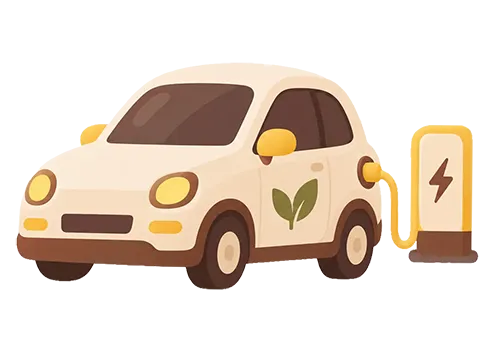

놓치면 아쉬운 기간 한정 꿀혜택

친환경자동차 오너라면?
광주 제2순환도로 통행료 감면
전기, 수소전기, 태양광자동차, 장애인복지시설 및 단체자동차를 운전한다면 이젠 제2순환도로 통행료를 감면받을 수 있습니다. 자세한 내용은 통합특별시 누리집 공지사항을 확인하세요!
통행료 최대 50% 감면2026년 50% · 2027년 30%
- 감면기간
- 까지
- 감면대상
- 사용본거지 주소가 전남광주통합특별시이면서 전기·수소전기·태양광자동차
- 감면비율
-
- 100분의 50(2026년 12월 31일까지)
- 100분의 30(2027년 1월 1일부터 12월 31일까지)
- 신청방법
-
- 방문신청 광주, 무안, 동부청사 민원실
- 비대면신청 각 담당 실·과 팩스, 이메일
- 접수처
-
- 광주 팩스 062-613-4729 이메일 mail777@korea.kr
- 무안 팩스 061-286-4804 이메일 kimon80@korea.kr
- 동부 팩스 061-286-4799 이메일 qkrgksmf1318@korea.kr
특별시민이 추천하고 싶은올해의 책은?
2027년 전남광주 올해의 책 선정을 위해 후보도서 시민 추천을 받습니다. 추천 분야는 어린이, 청소년, 일반 문학, 일반 비문학 등 4개 분야인데요. 전남광주통합특별시민이면 누구나 분야별 2권 이내, 1인 최대 8권까지 추천할 수 있어요.
추천받은 도서는 전남·광주의 도서관, 문학, 독서, 교육 분야 전문가 등으로 구성된 도서선정위원회 심사를 거쳐 20권의 후보도서로 압축될 예정인데요. 이후 시민 선호도 조사와 도서선정위원회 심사 결과를 합산해 올해의 책으로 최종 선정합니다.
4개 분야 · 1인 최대 8권분야별 2권 이내 추천
- 기간
- 까지
- 추천대상
- 국내 작가가 집필하고 최근 3년 이내 발간한 책
- 참여방법
-
- 개인: 전남도서관 누리집 > 올해의 책 추천도서
- 기관·단체: 도서관과 독서·문학 관련 기관·단체는 추천서를 작성해 공문으로 제출
남도의 맛이 한자리에!
제31회 남도음식문화큰잔치
가을이 무르익는 10월, 남도의 맛이 한자리에 모입니다. 27개 시군구가 펼치는 지역의 대표 음식을 한자리에서 만나보세요. 안유성 명장, 정관 스님, 천상현 셰프와 함께하는 스페셜 디너쇼, 명인의 쿠킹클래스, 식문화체험, 요리경연 등 남도의 맛을 보고, 만들고, 맛보는 진수를 만날 수 있을 거예요.
27개 시군구 대표 음식스페셜 디너쇼 · 쿠킹클래스 · 요리경연
- 기간
- ~
- 장소
- 나주 영산강정원 일원
- 주제
- 남도의 맛으로 하나 되는 통합특별시
가을 숲을 걸으며
자연관찰하세요
광주수목원에서 아름다움이 절정에 달한 가을 숲을 직접 느끼고 체험하는 ‘가을 숲, 생태탐험’을 운영해요. 수목원에서 계절에 따라 달라지는 곤충과 열매들을 관찰하며, 자연의 변화를 생생하게 경험해 보세요!
참가비 무료매주 토요일 오후 2시
- 기간
- ~ 매주 토 오후 2시
- 대상
- 초등학생 이상 또는 가족※ 14세 미만은 보호자와 함께 참여
- 프로그램
-
- 10/17, 10/24 ‘가을곤충’
- 10/31, 11/7 ‘가을열매’
- 참가비
- 무료
- 참여방법
- 통합특별시 누리집 > 바로예약